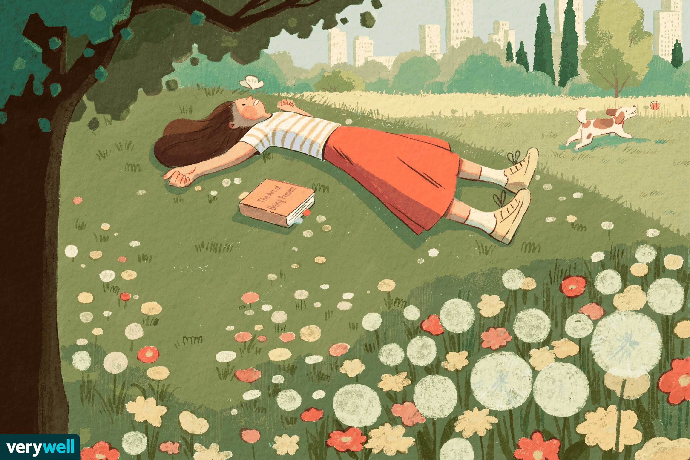

About My Website
Hello. My name is Trang. This website is just a corner in which I can put some my favorite of things.
Like a squirrels hide its precious nuts deep in its nest, just for a few moments gnawing happily~
There is a difference between me and the squirrel.
I see that, all of us have a special emotion, which often have us experence the same feeling of the others, which... is the origin of kindness, tolerance, forgiveness, patience, mercy, love, sharing.
It is empathy
.
Empathy makes us feel what the others feel.
In fact, when we just store somethings precious, we feel fascinating. But when we look at them, in our litter shell, it is more than satisfaction.
Consider it, I seem to store a part of my happiness here.
All I want to say is that, I hope my website, my happiness, may somehow make you happy, even a litter.
Many research have proven that our happiness usually comes from enjoyment
-
when we do somethings, and totally enjoy them.
So, what is actually that something
?
Things that invoke our enthusiasm, our passion!
Hobbies.
Therefore, what can we do to enjoy them?
There are many ways: visually, aurally, sensably... All depends on your style.
And now, I will show you my ways to do it.